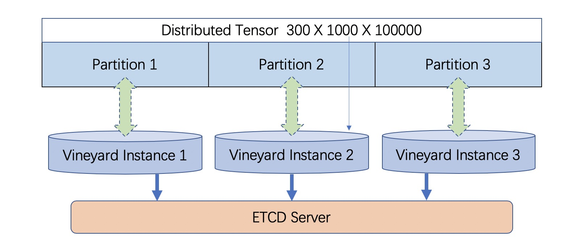

Architecture#
Motivation#
Existing big data practice usually adopts distributed databases or file systems as the intermediate storage to share immutable distributed data between heterogeneous computation systems that are involved in a big data task. This brings two significant overheads:
The structural data is transformed from/to the external data storage format (e.g., tables in relational databases, files in HDFS) back and forth in the beginning/end of each computation step, meanwhile, the structure and operations of the data are dismissed.
Saving/Loading the data to/from the external storage requires lots of memory-copies and disk-IO costs, which becomes the bottleneck of the entire process in more and more cases as the efficiency of the computation systems are growing rapidly these years.
In addition, the lack of managing the data uniformly through the big data task obstructs the application of modern techniques such as data monitoring, data-aware optimization, and fault-tolerance, thus, further decreases the productive efficiency.
Overview#
To address this issue, vineyard provides:
In-memory distributed data sharing in a zero-copy fashion to avoid introducing extra I/O costs by exploiting a shared memory manager derived from plasma.
In general, vineyard servers are launched as daemons in every machine of the underlying cluster to make up a vineyard cluster, and each vineyard instance will allocate a shared memory pool to store the corresponding partition of the distributed data, and the meta data of the distributed data will be shared across the vineyard cluster via the backend key-value store, e.g., etcd or zookeeper.
Distributed data sharing in vineyard#
For example, a distributed tensor is stored in the vineyard cluster as illustrated above. Each partition is stored in the corresponding vineyard instance, while the meta data, e.g., the shape of the tensor is stored in the backend key-value server of vineyard, i.e., the etcd server.
To reuse the distributed tensor in parallel processing, each process will first establish a vineyard client that is connected to the corresponding vineyard instance on the same machine, and then get the meta data of the distributed tensor. Finally based on the meta data, each process can get the corresponding partitions of the distributed tensor from the vineyard instance via memory mapping in a zero-copy fashion, and start to use the data for computation.
Built-in out-of-the-box high-level abstraction to share the distributed data with complex structures (e.g., distributed graphs) with nearly zero extra development cost, while the transformation costs are eliminated.
For example, a distributed graph is composed of fragments that are stored distributedly over the vineyard cluster, and each fragment consists of vertices, edges, data on vertices, data on edges, indices (e.g., the CSR indexing), vertex maps and so on.
Unlike the external storage approach where fragments are transformed into adjacent matrix to fit into a table schema in the database, vineyard stores the fragment with the structure, so that when we use the graph, the indices can be directly reused to facilitate the graph traversal. Furthermore, the high-level abstracted graph traversal operations are built-in with the vineyard distributed graph, as a result, nearly zero extra development are required to reuse the data.
Architecture of vineyard#

Architecture of vineyard#
The figure above demonstrates the architecture of vineyard.
Server side#
On the server (daemon) side (i.e., the aforementioned vineyard instance), there are three major components:
The shared memory is the memory space in vineyard that shares with vineyard clients via the UNIX domain socket by memory mapping.
As we mentioned before, the partitions of the distributed data are living in the shared memory of the corresponding vineyard instance in the cluster.
The metadata manager provides management for the metadata of the data stored in vineyard.
The metadata manager keeps the metadata (structures, layouts and properties) of the data to provide high-level abstractions (e.g., graphs, tensors, dataframes).The metadata managers in a vineyard cluster communicate with each other through the backend key-value store, e.g., etcd server, to keep the consistency of the distributed data stored in vineyard.
The IPC/RPC servers handle the IPC/RPC connections respectively from vineyard clients for data sharing.
In particular, the client can get the metadata of the data stored in vineyard through both IPC and RPC connections. But to get the data partition, the client has to connect to the vineyard instance through UNIX domain socket, this is because, the data sharing is via the system call of memory mapping, thus requires the client to stay in the same machine of the vineyard instance.
Client side#
On the client side, the core components is the vineyard client. The client side consists both the low-level APIs for accessing the vineyard instances in a delicate fashion as well as high-level APIs for data structure sharing and manipulation and routines reusing (e.g., I/O drivers). More specifically,
The IPC client communicates with locally vineyardd instances by connecting to the UNIX domain socket.
The IPC client is used to establish a IPC connection between vineyard server and the client, making memory-sharing (by
mmapand transferring the file descriptor) possible between the vineyard server and the computing engines.The RPC client communicates with remote vineyardd instances by connecting to the TCP port that the vineyard daemon is bind to.
Unlike the IPC client, the RPC doesn’t allow the memory-sharing between processes but is useful for retrieving the metadata of objects in the vineyard cluster.
The builders and resolvers for out-of-the-box high-level data abstractions provide a convenient way for the applications to consume objects in vineyard and produces result objects into vineyard.
The builders and resolvers adopt an extensible design where the users can register their own builders and resolvers for their newly defined data types, as well as new builders and resolvers that building the ad-hoc engine-specific data structures as vineyard objects and wrapping vineyard objects as engine-specific data types at a low cost.
The builders, resolvers, as well as the registry are part of the language-specific SDKs of vineyard. Currently Python and C++ are officially supported and the Rust and Go SDKs are under heavily development.
The plugable drivers assign specific functionalities to certain types of data in vineyard.
In particular, I/O drivers sync with external storages such as databases and file systems to read data into and write data from vineyard, while partition and re-partition drivers reorganize the distributed graphs stored in vineyard to balance the workload.
Note
The drivers usually employ the low-level APIs for delicate operations.
Object migration is the mechanism that implemented in the client side to migrate objects between vineyardd instances in a cluster. The object migration is usually needed when the computing engines cannot be scheduled to co-located with the data that the jobs needed is placed.
Object migration is implemented in the client side as a process pair where the sender and receiver are both connected to (different) vineyardd instances and communicate with each other using TPC to move objects between vineyard instances. We don’t put the object migration to the server side to decouple the functionalities and allows users to registry a more efficient object migration implemented on their own deployment infrastructures, e.g., leveraging RDMA and other high-performance network technologies.
Core features#
Distributed data sharing in big data tasks#
By examining the practice of big data tasks such as numeric computing, machine learning and graph analysis carefully, we summarize that the data involved has four properties:
Distributed and each partitioned fragment usually fits into memory;
Immutable, i.e., never modified after creation;
With complex structure, e.g., graph in CSR format;
Required to share between different computation systems and programming languages.
Thus vineyard is designed accordingly with:
Composable design on vineyard objects;
Immutable zero-cost in-memory data sharing via memory mapping;
Out-of-box high-level data abstraction for complex data structures;
Extensible design on builder/resolver/driver for flexible crossing-system and crossing-language data sharing.
In general, the design choices of vineyard are fully determined on coping the difficulties in handling large-scale distributed data in practice.
Out-of-box high-level data abstraction#
Vineyard objects are stored with structures, and high-level abstractions. For instance, a graph with CSR format in vineyard stores the index as long as the vertices and edges, so that operations like edge iteration based on the index can be provided. Thus, users don’t have to implement the index-building function and edge iterators by themselves, which is usually required in the existing big data practice.
Zero-cost in-memory data sharing#
Vineyard provides zero-cost data sharing by memory-mapping, since data objects in vineyard are immutable. When the object is created, we allocate blobs in vineyard to store the data payload, on the other hand, when getting the object, we map the blob from the vineyard instance into the application process with inter-process memory mapping approaches, so that no memory copy is involved in sharing the data payload.
Convenient data integration#
The extensive design on builder/resolver/driver allows convenient extension of existing vineyard objects to different programming languages. Moreover, with codegen tools in vineyard, makes it possible for users to transplant their data structures into vineyard with only a few annotations.
Data orchestration in a python notebook#
Using vineyard as the common data orchestration engine through the end-to-end big data processing, users can hold large-scale distributed data as variables of vineyard objects in python. Thus, as long as the computation modules involved provides python API, users can write down the entire processing pipeline in a python notebook. By running the python script, users can manage trillions of data and different computation systems in the background distributedly across the cluster.
Non-goals and limitations#
NOT for mutable objects#
Once a vineyard object is created and sealed in the vineyard instance, it becomes immutable and can NOT be modified anymore. Thus vineyard is not suitable to be utilized as a data cache to store mutable data that changes rapidly along the processing pipeline.
NOT for instant remote data partition accessing#
The partitions of a distributed data are stored distributedly in corresponding vineyard instances of the cluster. Only the client on the same machine can access the data partition. In case to access a remote partition, data migration APIs of vineyard can be invoked to trigger migration process, but not for instant accessing.